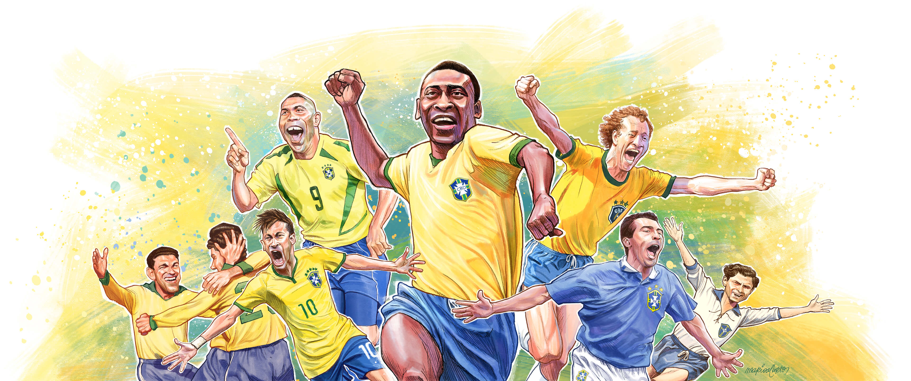
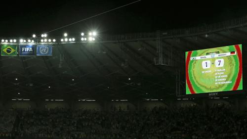
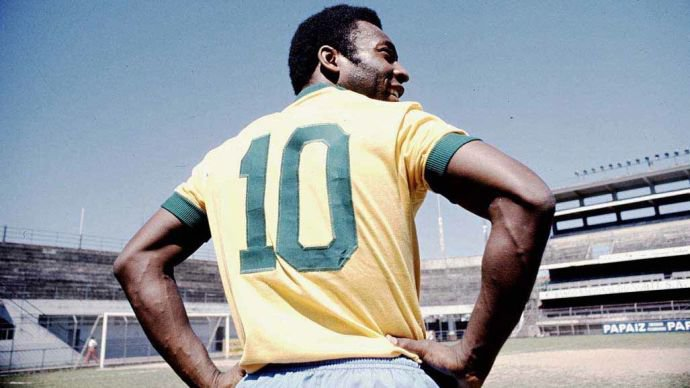
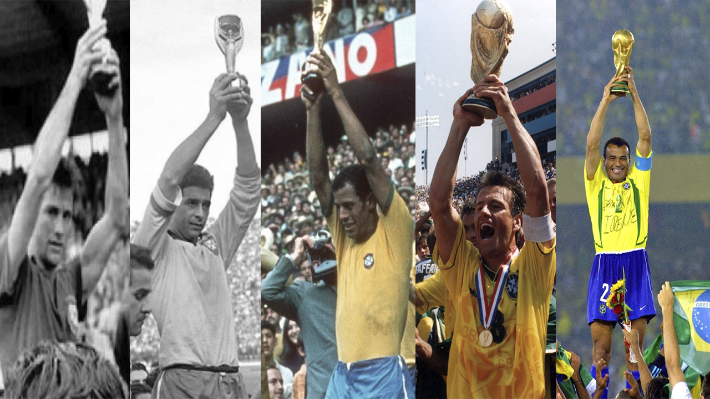
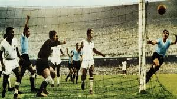
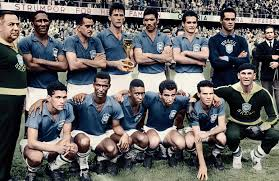

O Brasil é a única seleção presente em todas as Copas do Mundo.

A maior derrota foi contra a Alemanha em 2014 (7x1).

A camisa 10 ficou famosa mundialmente com Pelé.

O Brasil possui 5 títulos mundiais.

A final da Copa de 1950 no Maracanã ficou conhecida como "Maracanazo".

Garrincha encantava o mundo com seus dribles imprevisíveis.
Ronaldo foi artilheiro e campeão da Copa de 2002.
Neymar já é um dos maiores artilheiros da história da Seleção.

A camisa azul da Seleção é inspirada em Nossa Senhora Aparecida.